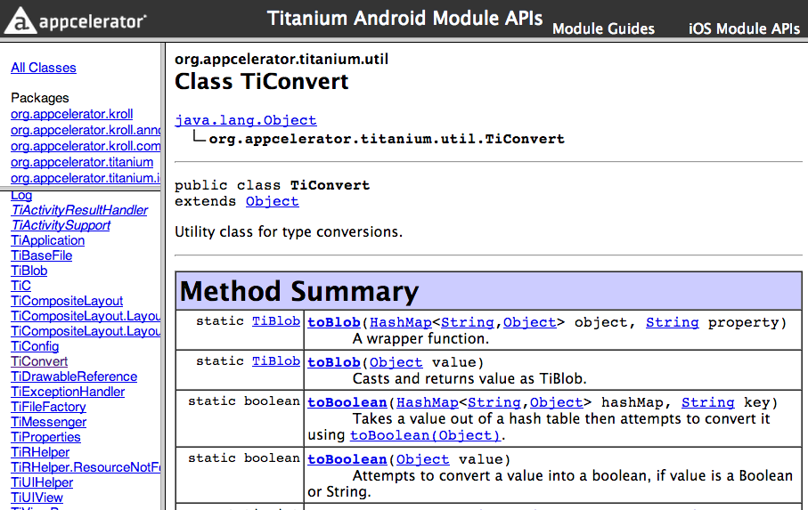

Extending Titanium
Titanium Certified Expert (TCE) Training
In this lesson, you will:
- Explore the basic Titanium internal architecture
- List the steps for building a module
- Learn how to expose native functionality in your module
- Identify documentation resources
Disclaimer!
This is an overview, not a comprehensive treatise
 Topic
Topic
Titanium Architecture
Titanium Architecture
We all know the basics...

Titanium Architecture

...but now we need to understand the bridge
How is a Titanium app packaged?
How do I create new behaviors in native code?
How do I create a JS API?
When a Titanium app launches...
Native app starts - activity is launched (Android) or app delegate is run (iOS)
A JavaScript context is created (Rhino/V8 or JSCore)
JS app is evaluated starting with app.js
JS Context communicates with C/Java code
The 'bridge' between them is what we call Kroll
The Kroll Bridge
What is Kroll?
- Metallurgical process by which titanium (the element) is created
- The name given to the 'cross-language, cross-platform binding and invocation framework'
- It's the bridge between JavaScript and native code
Topic
Building Modules
System Requirements - iOS
- Same as for Titanium Mobile development:
- Xcode
- Titanium SDK
- A Mac
System Requirements - Android
- Titanium SDK
- Android SDK
- Android NDK (Native Development Kit)
- Ant (build tool)
- gperf (GNU utility for hashing function)
- Eclipse
Module Creation Steps
- Create the module project: In Studio, choose File, New, Titanium Module
- Develop your native code (in Xcode or Eclipse)
- Test in a Titanium Mobile project
- Build & package in Studio
- Distribute (Marketplace, internal, share on GitHub, etc)
Topic
Implementing Native Functionality
Module Object Model
Proxy - base class that represents the native binding between your JavaScript and native code (a module will have at least one proxy)
View - actual native representation of a view object (for UI components)
ViewProxy - represents model data (state of the View, in case the View must be released for memory management) and exposes the JavaScript API & events
Module - specialized type of Proxy that describes a specific API set, or namespace
Our Goals — JavaScript interfaces
Proxy objects can have public properties:
- Ti.Platform.osname
Proxy objects can have public methods:
- Ti.UI.createWindow
Proxy objects can emit and listen for events:
- Ti.App.addEventListener('foo', function(){});
Titanium Modules
Every Titanium module is plugged into Kroll's microkernel architecture
- iOS Header File

- Java Class File

iOS - Proxy Property
To expose a property, simply define an Objective-C property:
// From PlatformModule.h
@property(readonly,nonatomic) NSString *name;
@property(readonly,nonatomic) NSString *model;
@property(readonly,nonatomic) NSString *version;
@property(readonly,nonatomic) NSString *architecture;
@property(readonly,nonatomic) NSString *macaddress;
Exposed in JavaScript as:
var model = Ti.Platform.model;
Android - Proxy Property
To expose a property, annotate it's getter/setter with @Kroll.Property:
// From PlatformModule.java
@Kroll.getProperty @Kroll.method
public String getModel() {
return TiPlatformHelper.getModel();
}
Exposed in JavaScript as:
var model = Ti.Platform.model;
iOS - Proxy Method
To expose a method, simply define an Objective-C method:
// From PlatformModule.m
- (NSNumber *)openURL:(NSArray*)args
{
NSString *newUrlString = [args objectAtIndex:0];
NSURL * newUrl = [TiUtils toURL:newUrlString proxy:self];
BOOL result = NO;
if (newUrl != nil)
{
[[UIApplication sharedApplication] openURL:newUrl];
}
return [NSNumber numberWithBool:result];
}
Exposed in JavaScript as:
Ti.Platform.openURL('http://www.google.com');
Android - Proxy Method
To expose a method, define a public method with @Kroll.method signature:
// From PlatformModule.java
@Kroll.method
public boolean openURL(String url) {
if (DBG) {
Log.d(LCAT, "Launching viewer for: " + url);
}
Uri uri = Uri.parse(url);
Intent intent = new Intent(Intent.ACTION_VIEW, uri);
try {
getActivity().startActivity(intent);
return true;
} catch (ActivityNotFoundException e) {
Log.e(LCAT,"Activity not found: " + url, e);
}
return false;
}
Exposed in JavaScript as:
Ti.Platform.openURL('http://www.google.com');
iOS - Native Event Handlers
// From GeolocationModule.m
-(void)_listenerAdded:(NSString *)type count:(int)count
{
BOOL startStop = NO;
if (count == 1 && [type isEqualToString:@'heading'])
{
startStop = YES;
}
else if (count == 1 && [type isEqualToString:@'location'])
{
startStop = YES;
}
if (startStop)
{
TiThreadPerformOnMainThread(^{[self startStopLocationManagerIfNeeded];}, NO);
}
}
Android - Native Event Handlers
// From GeolocationModule.java
@Override
protected void eventListenerAdded(String event, int count, KrollProxy proxy)
{
if (TiC.EVENT_HEADING.equals(event)) {
if (!compassListenersRegistered) {
tiCompass.registerListener();
compassListenersRegistered = true;
}
} else if (TiC.EVENT_LOCATION.equals(event)) {
// more here ... see GitHub
}
super.eventListenerAdded(event, count, proxy);
}
Data conversions across the bridge
Simple types (strings) auto-convert, helper classes for complex types

Topic
Resources
Resources
- docs.appcelerator.com : Extending Titanium guide
- docs.appcelerator.com : Titanium API
- ModDevGuide: github.com/appcelerator/titanium_modules
- Titanium core modules: github.com/appcelerator/titanium_mobile
- Anything core Titanium does, you can do in your module
- http://www.slideshare.net/omorandi/ticonf
Summary
In this lesson, you:
- Explored the basic Titanium internal architecture
- Listed the steps for building a module
- Learned how to expose native functionality in your module
- Identifed documentation resources
Q&A
Lab Goals
Follow the steps in the iOS (or Android) module development wiki guide
Create the sample module that guide describes
Use that module in a Titanium project